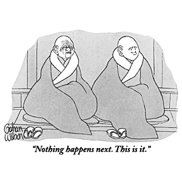

Yup, that's it. And we do it every Tuesday morning, 8:40-9am. Come, bring your friends, no experience required.
Basic mindfulness-awareness meditation has been proven to reduce stress, improve brain function, benefit health and,undoubtedly, make you better looking!
Instruction offered, if desired.